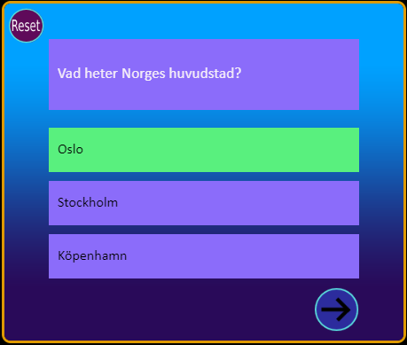

Projects
Uppgift 3: Frågesporten
Learn more
Uppgift 5: Räkna med mig
Learn more
Project: Invention Cartographer
Learn more
About
Hej!
Jag heter Anders och jag studerar till Spelprogrammerare på Stockholms Universitet. Anledningen till att jag vill jobba med
spelutveckling är dels för att jag gillar problemlösning men också för att, tro det eller ej, jag gillar spel.
Jag skapade den här portfolion för att kunna dela med mig av de projekt jag skapar under utbildningen. Målet med designen
av portfolion är att snabbt och översiktligt förmedla vad för roll jag söker och vad för projekt jag har skapat. Därav har första
sidan endast mitt namn och roll och inget annat. Därefter presenteras mina projekt i minimal form via titel samt en säljande bild av spelet, detta
för att snabbt ge en beskrivande översikt av mina projekt. Om något verkar intressant kan man klicka vidare till en sida som ger mer djupgående
information om projektet.